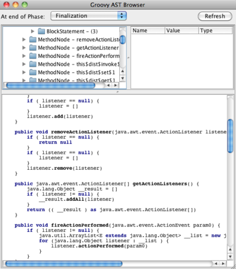

他言語からの訪問 【第 1 回】 Groovy (前編)
書いた人：上原潤二 (NTT ソフトウェア/JGGUG)
はじめに
Rubyist の皆さんこんにちは。Groovy についての記事を書くことになりました上原と申します。Groovy についてはるびまでも、「Rubyist のための他言語探訪 【第 5 回】 Groovy」で 2005 年にみずしまさんの手による紹介がありますが、あらためて Groovy についてご紹介していきたいと思います。
この記事はなんのため？
Groovy は Ruby から多大な影響を受けたオブジェクト指向スクリプト言語です。具体的には、構文やライブラリの設計について、あるいは動的言語としての特性について、Ruby から大きな影響を受けて設計されています。しかしながら、その後、Groovy は他の言語からもアイデアを貪欲に取り込んだり 1、また独自のアイデアで急速な発展を続けてきました。今回は、その中で「Groovy にあって Ruby には無いか、あっても大きく異っている機能」を紹介します。
本記事の目的は、Ruby の利用者・開発者の皆さんにとってなんらかの参考になり、「へーこんな(機能/見方/アプローチ)があるんだ」と思う情報が1つか2つでも提供できることです。本記事をきっかけとして、Ruby もしくは Groovy コミュニティにおいて、両言語の何らかの発展に寄与するようなアイデアや活動に繋がれば存外の喜びです。
対象読者
- Ruby だけを知っていて、他の言語もそろそろ勉強したいなーと思っている人
- Ruby に新規機能を追加したいなと考えていて何かネタがないかなーと探している人
- Ruby での開発から Java での開発にジョブチェンジして、Java の冗長さ、厳格さなどにうんざりしている人
バージョン
本記事で記述する対象の Groovy のバージョンは 1.8.0 です。
Groovy 概要
Groovy は Java VM で動作するスクリプト言語であり、__ぶっちゃけ JRuby みたいなもん__です。 ただし、Groovy は、Java と__徹底的に仲良くしよう__という思想でつくられています。具体的にはツールやライブラリ、フレームワーク、セキュリティモデルなど Java と共通する部分がきわめて大きいので、Java の経験があれば修得は比較的容易です。さらに Java と Ruby の両方を知っていれば、その修得は極めて自然かつスムーズなものとなるでしょう。
Groovy の特徴
ここでは Groovy の機能を全部紹介することはできませんので、特徴を箇条書きにすることに留めておきます。
- Java との互換・相互運用性についての特徴
- 文法はほぼ Java の上位互換
- Groovy クラスは Java クラスでもある
- Groovy コードはかならず Java バイトコードにコンパイルされた上で実行される
- ライブラリは独自の体系はもたず Java 標準 API を基本として Groovy 独自のクラスを追加
- ただし「大クラス主義」を実現すべく Java API に対し大量のメソッドが追加されている
- 文法上の特徴
- クロージャがあり中核的に重要なものとして使われている
- 決まりきったコード (ボイラープレートコード)」は省略可能
- 型システムについての特徴
- プリミティブを排して「すべてがオブジェクト」
- 型指定は省略可能。省略しなくても良い (オプショナルタイピング、後述)
- メソッドは動的にクラスやインスタンスに追加可能で実行時に探索する (Ruby のオープンクラス的な動作)
- (Java で定義されたオブジェクトを含む) オブジェクトの振舞いはメタオブジェクトプロトコル (MOP)2で定義・操作される
コード例を通じて Ruby と比較してみる
Ruby と対比して Groovy のコード例をいくつか示してみます。
コード例その 1、ハローワールド他
まずは、「Hello World」を含むちょっとした Ruby コードです3。
puts "hello world"
[1,2,3].each { | it |
puts it
}
p (1..100).find_all{|v| v % 3 == 0} # 3 の倍数を表示
map = {a: 1, b: 2, c: 3} # ハッシュリテラルGroovy ではこれに対応するコードは以下のようになります4。
println "hello world"
[1,2,3].each {
println it
}
println((1..10).findAll{ it % 3 == 0 }) // 3 の倍数を表示
map = [a:1, b:2, c:3] // マップリテラルいかがでしょうか、「確かに似ている」と感じられたのではないでしょうか。留意点としては、Groovy の「it」はクロージャに渡されている暗黙の引数を表すので、クロージャの引数が 1 つの場合は引数の宣言が不要となります。もし it を使いたくなければ明示的にクロージャ引数を定義することもできます。
[1,2,3].each { v ->
println v
}| 「->」は、クロージャの仮引数と本体を区切る記号です (Ruby の | …… | に対応)。 |
コード例その 2、Person クラスの定義
別の例として、name や age というフィールドを持つ Person というクラスを定義してみます。まずは Ruby から。
class Person
attr_accessor :name, :age
def initialize(name, age)
@name = name
@age = age
end
def to_s
"Name is #{@name}, age is #{@age}."
end
end
p = Person.new('taro', 30)
puts pGroovy では、上は例えば以下のように定義できます。
class Person {
def name
def age
String toString() {
"Name is $name, age is $age."
}
}
def p = new Person(name:'taro', age:30)
println pGroovy ではコンストラクタを明示的に定義しない場合、「new Person(name:’taro’, age:30)」の様に名前引数の形式で呼び出してフィールドを初期化できるコンストラクタが暗黙に生成されるため、コンストラクタの定義を省略しています。 また、アクセッサメソッド (Getter, Setter) 群はフィールドを定義するだけで自動的に生成されます5。
さらに、以下のようにクラスに「@TupleConstructor」というアノテーション6を指定すると「コンストラクタ引数の並んでいる順番でフィールドを順に初期化するコンストラクタ」が自動的に生成されるので、「new Person(‘taro’, 30)」でインスタンスを生成できます。
@groovy.transform.TupleConstructor
class Person {
def name
def age
String toString() { "Name is $name, age is $age." }
}
def p = new Person('taro', 30)このように、「決まりきったコード (ボイラープレートコード)」を書かなくて済むことに血道を上げるのが Groovy のポリシーと言えます7。
Groovy の機能紹介 (前編)
以降、Groovy の機能を紹介していきます。
オプショナルタイピング
Groovy と Ruby で異る点として、まず Groovy では型指定を行うことができる、ということが挙げられます。 前述の Person の例におけるpの定義
def p = new Person('taro', 30)は以下のように p を Person 型として宣言することができます。
Person p = new Person('taro', 30)フィールドやメソッド引数、メソッドの返り値などでも同様です。これをオプショナルタイピングと呼び、静的型宣言と動的型を任意に使いわけることができます。 ただし、型エラー検出の観点からすると、Groovy では任意の代入が型エラーかどうかをコンパイル時には決定できない8ので、代入時の型チェックは実行時9に行われます。
私見ですが、Groovy のオプショナルタイピングは今のところ、型チェックという意味よりも、どちらかというと型情報をドキュメントとして書くことによるコードの可読性向上についての利点が大きいと感じています10。
AST 変換
次に Groovy の AST 変換について説明します。Groovy の AST 変換は、2009 年にリリースされた Groovy 1.7 以降で導入された比較的新しい機能です。
AST 変換の概要
Groovy に限らず、Ruby を含め多くの言語処理系では、内部的には実行までの過程でコードの中間表現として AST (Abstract Syntax Tree, 抽象構文木 ) を使用します。
Groovy では、この AST を加工・操作するための API を開放11しており、AST の変換モジュールもしくは変換処理を AST 変換と呼んでいます。AST 変換には、標準 AST 変換として Groovy が提供しているものや、フレームワークやツール提供者が提供しているものが多くあり、もちろん Groovy プログラマが自ら AST 変換を定義することもできます。
以下に AST 変換が適用される様子を示します。

AST 変換でできること
AST 変換で実現できることは多岐に渡っています。AST を自由に変更できるので、コードの意味を全く変えてしまうこともできます。以降、いくつか例を示します。
AST 変換の例 1 ー @TupleConstructor
前節で出てきた「@TupleConstructor」アノテーションは、実は AST 変換です。AST 変換はこのようにアノテーションの指定をきっかけとして起動することができます。TupleConstructor で起動される AST 変換はクラス定義の AST をたどって、定義されているフィールドからコンストラクタのコードを自動生成しクラス定義に挿入します。
AST 変換の例 2 ー Power Assert
Groovy の特徴に「assert のメッセージが妙に詳しい」というものがあります。例を示します。
s = "abc"
assert (s.capitalize() * 2).size() == 7上を「test.groovy」として保存し、実行すると以下が表示されます(等幅フォント推奨)。 Assert の引数の部分式ごとに値が表示されるので、Assert に失敗した理由を探るために、式の値をデバッガで追ったりする手間を減らすことができます。
$ groovy test.groovy
Caught: Assertion failed:
assert (s.capitalize() * 2).size() == 7
| | | | |
| Abc | 6 false
abc AbcAbc
at powerassert.run(powerassert.groovy:2)この背後では、Assert 引数の式の AST がツリーとして解析され、「部分式ごとに計算した値をカラムを調整して Assert のメッセージに構築するコード」が AST 変換により生成されて実行されています。Power Assert は言語処理系本体 (Groovy のコンパイラやコード生成部)に手を入れることなく、標準の AST 変換として実現されています12。
AST 変換の例 3 ー Groovy++
「Groovy++」という「静的 Groovy」とも呼ぶべき Groovy の拡張があります。以下コード例です。
- Groovy のコード:
def sum(i) {
i == 0 ? 0 : i+sum(i-1)
}- Groovy++ のコード:
@Typed
int sum(int i) {
i == 0 ? 0 : i+sum(i-1)
}int などの型指定は、Groovy でも付けても構わないので、違いは「@Typed アノテーション」の有無のみなのですが、@Typed アノテーションが指定された Groovy コードが Groovy++ として解釈されます。Groovy++ では変数や引数に型指定が必須となり、オプショナルタイピングではなくなります。そして型指定の情報を静的型のチェックに使用した上で、静的なコードを生成するので、動作速度は Java とほぼ同等になります。ただし、Groovy++ ではクラスやインスタンスに動的にメソッドを追加することはできなくなります。
Groovy++ の基本的な動作は AST 変換として実現されています。AST 変換は、Groovy におけるコンパイル処理の各ステージに介在することができますが、「型チェック」や「コード生成ステージ」の処理に介入して実現しているのです。
AST 変換の例 4 ー Grape(@Grab)
Groovy には Grape13 という言語組み込みのライブラリ管理機構があります。Groovy コードに
@Grab('net.sourceforge.htmlunit:htmlunit:2.8')
import com.gargoylesoftware.htmlunit.WebClient
page = new WebClient().getPage("http://..")というように @Grab アノテーションを指定するだけで、スクリプトの初回実行時に指定した Java のライブラリとそれが依存するライブラリ群をインターネット経由でダウンロードし実行することができます。Ruby Gems のようなものですが、明示的なインストール操作は必要ありません。
Grab の仕組みは AST 変換も使って実現されています。
AST 変換を使った開発
標準 Groovy には、AST 変換が数多く定義されています。たとえばデザインパターンを実現するもの14、特定のコーディングパターンを実現するもの15、Java を強化もしくは弱点を補足するもの16、記述を簡潔にするもの17、決りきったコードを生成するもの18などです。
これらの AST 変換を利用すると、記述を簡潔にするなどの利点がある反面、どのような動作をするかが見えにくくなるという問題があります。
この問題を軽減するために、AST 変換の結果、どのようにコードが加工されているかを見ることができる「AST ブラウザ」が助けになります。以下が AST ブラウザの画面です。 
AST ブラウザでは、コンパイルの各段階で Groovy の AST が中間段階として、もしくは最終的にどのような状態であるかを、AST のツリービューおよび AST から再現された Groovy コードとして表示することができます。AST ブラウザは GroovyConsole の機能としてメニューから呼びだすことができます。以下は、GroovyConsole の画面です。

前編のまとめ
今回の前編では、Groovy のオプショナルタイピングと AST 変換について解説しました。
次回は、実行時メタプログラミング、およびビルダーについて紹介する予定です。

最後に宣伝になりますが、現在筆者は Groovy に関する日本初のオリジナル書籍「プログラミング Groovy」を執筆中であり、近々技術評論社より発刊予定(予約受け付け中)です。本記事で Groovy に興味を持たれた方は乞うご期待です。
著者について
- 上原潤二
- NTT ソフトウェア株式会社所属。JGGUG ( 日本 Grails/Groovy ユーザ会) 運営委員。Java 技術および言語処理系実装に興味がある。「Grails 徹底入門」執筆メンバーの1人。Groovy 技術に関するブログ「Grな日々」を主宰している。Groovy の起動を高速化する OSS ソフトウェアである GroovyServ の開発者の1人。
URL: http://d.hatena.ne.jp/uehaj/, Twitter: @uehaj
バックナンバー
-
Groovy は Ruby 以外の言語の影響も受けています。影響が圧倒的に大きいのは Java ですが、Scala や Clojure などからも精力的に機能を取り込んでおり、その自重しなさが Groovy らしさの一つではないかと私は思います。 ↩
-
MOP は、「オープンかつ拡張可能なプログラムの意味の解釈機構」です(Wikipediaより)。 ↩
-
筆者は Ruby に詳しくないので、Ruby らしくない、もしくは最適ではないコードかもしれませんがご容赦下さい。 ↩
-
Groovy は Java とほぼ上位互換なので、Java 風にも書けますが、ここではなるべく Java らしく無いように書いています。 ↩
-
アクセス修飾子や final を指定することでアクセッサメソッドの自動生成を抑制・コントロールすることができます。 ↩
-
アノテーションはクラスや変数などに任意のメタデータを付与する Java の機構であり、Groovy でも利用可能です。 ↩
-
おそらく、ボイラープレートコードを書かなくて済む、ということを Java との違いとして強調する必要がある、という「言語の進化圧」があり、このように発達しています。 ↩
-
asType()というキャスト用メソッドがクラスやインスタンスに実行時に注入されると任意の代入は正しいかもしれないため。 ↩
-
実行時ではありますが、ダックタイピングと比べると、メソッドの呼び出し時にメソッドが無いことで型エラーが発覚するのではなく、代入時(引数としてメソッドを渡した時点、返り値を受けとった時点)にチェックのタイミングが前倒しになるので、ダックタイピングよりは早いタイミングで検出できるとは言えます。 ↩
-
Groovy 1.8.0 では int 型に限って特別な最適化が導入されたので、性能向上面の効果もあります。ただし現時点では限定的です。 ↩
-
なお、Groovy のコンパイル処理は Groovy 1.7 以前からもともと内部的に AST 変換の集合体でした。1.7 以降は、Groovy 処理系の開発者以外からも容易に利用できるようにAPIとして整備された、ということです。 ↩
-
Groovy プログラマは Power Assertが AST 変換で実現されていると意識する必要ありません。ただの言語拡張に見えます。 ↩
-
The Groovy Adaptable Packaging Engine または Groovy Advanced Packaging Engine ↩
-
@Immutable, @Delegate, @ListenerList ↩
-
@WithReadLock,@WithWriteLock ↩
-
@Synchronized, @ThreadInterrupt,@TimedInterrupt,@ConditionalInterrupt ↩
-
@Newify, @TupleConstructor, @InheritConstructor, @Log(@Commons,@Log4j,@Slf4j) ↩
-
@AutoClone, @AutoExternalize, @ToString, @EqualsAndHashCode, @Canonical, @IndexedProperties ↩